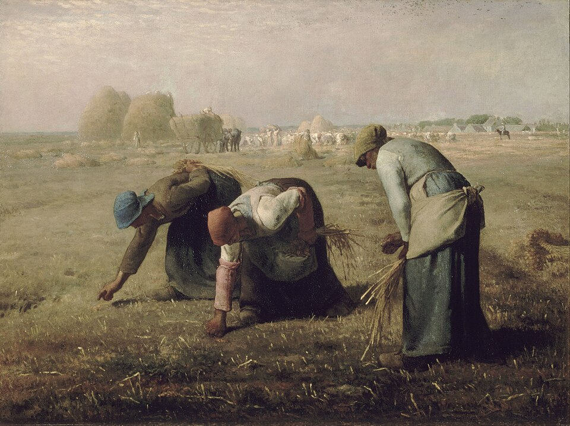

I am still a student of experimental economics, and these reading lists are my attempt to make sense of a literature far larger than myself.

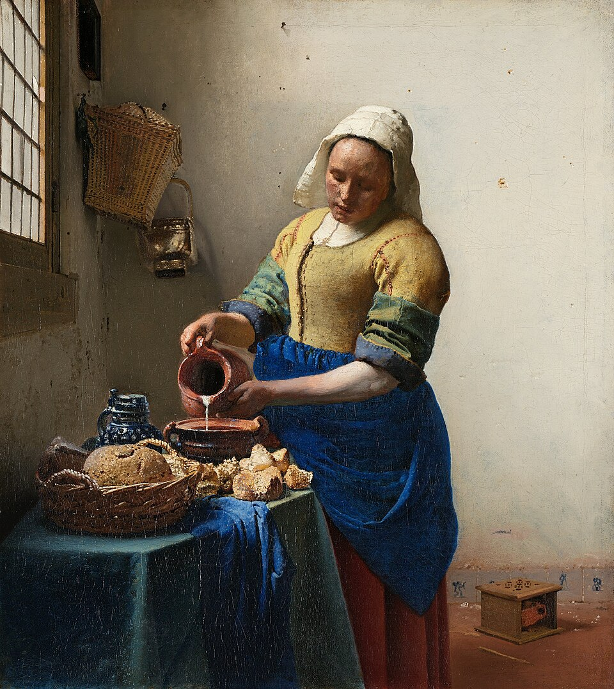

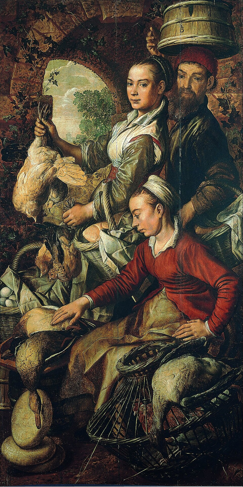

I am still a student of econometric methods, and these materials are my working notes. I compiled them while trying to teach myself techniques that are far more sophisticated than anything I can claim to have mastered. Errors and omissions are mine alone.
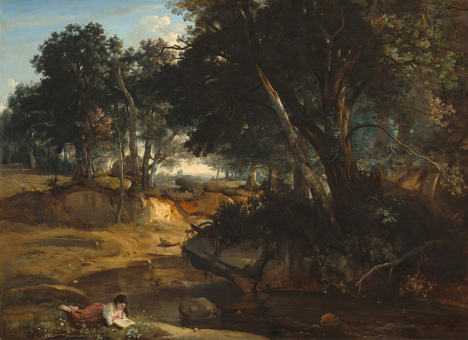
Causal forests allow researchers to discover heterogeneous treatment effects without imposing functional form assumptions. I am still learning this method, and these slides are my attempt to organize what I have understood so far.
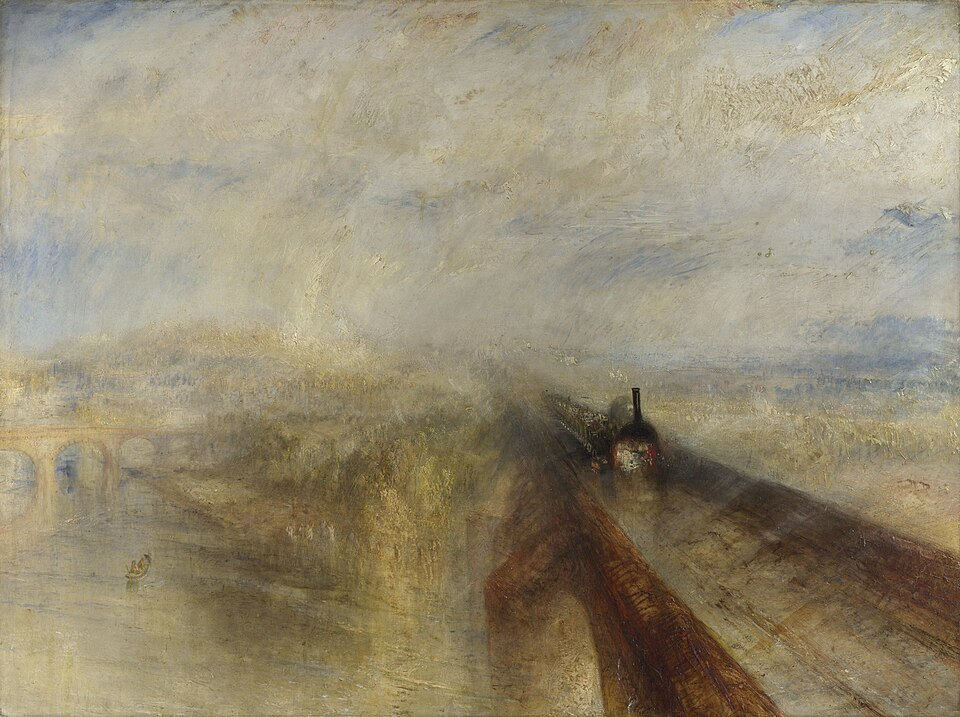
Local projections, introduced by Jordà (2005), offer a flexible alternative to VARs for estimating impulse responses. I have found them particularly useful for settings where the dynamic effects of a shock are the object of interest. These slides are my notes from learning the method.
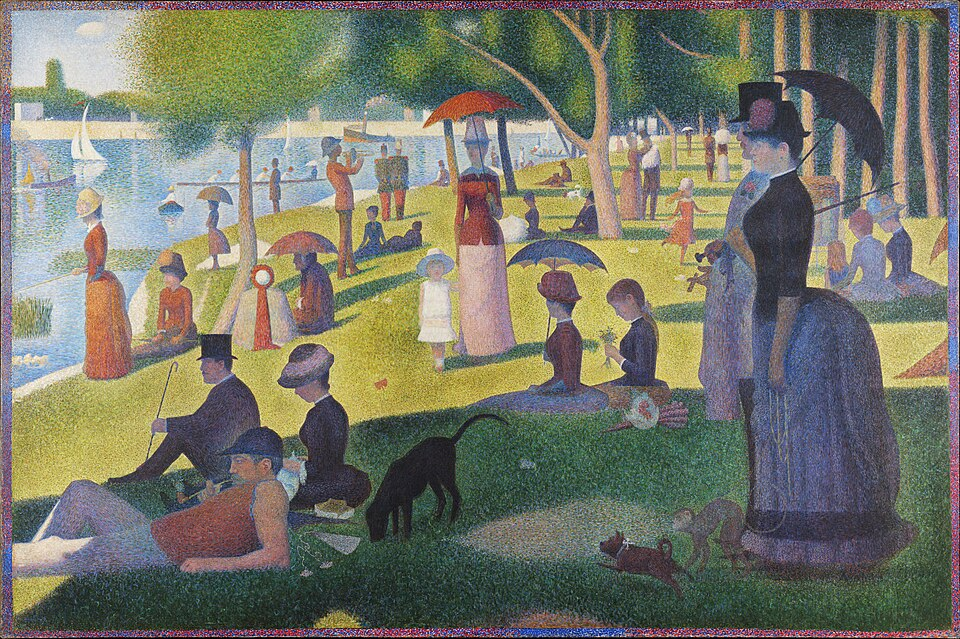
The Least Absolute Shrinkage and Selection Operator (LASSO) is a workhorse of high-dimensional econometrics. I am only beginning to understand its theoretical properties, and these slides reflect my limited understanding so far.
Mendelian randomization uses genetic variants as instrumental variables to estimate causal effects. It sits at the intersection of economics and genetics — two fields I am trying to bridge in my own work. I am very much a beginner here, and these slides are my study notes.
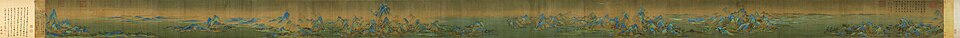
Economic history is a field of staggering depth and complexity. I am only beginning to find my way through it, and these reading lists reflect my own limited perspective.

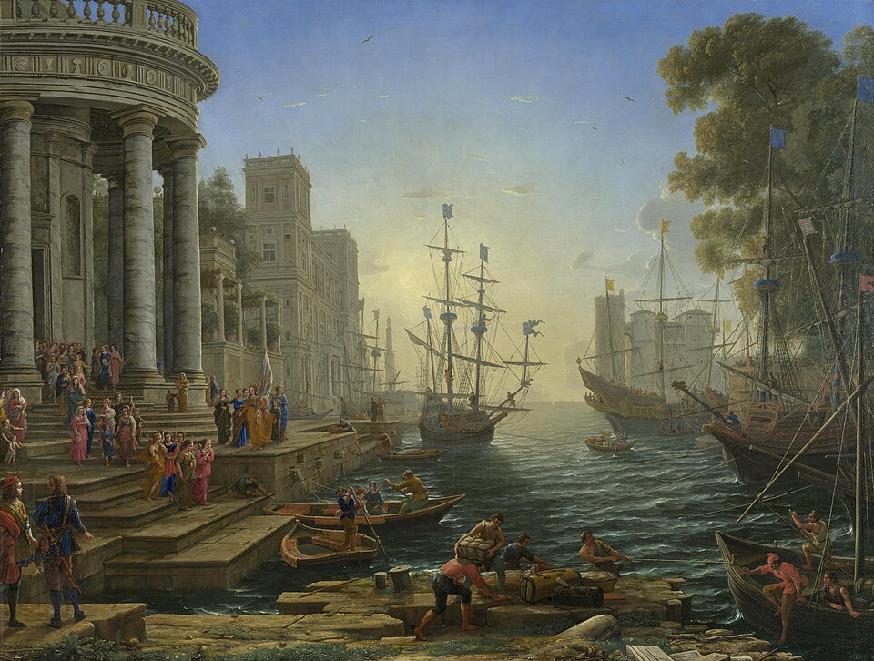
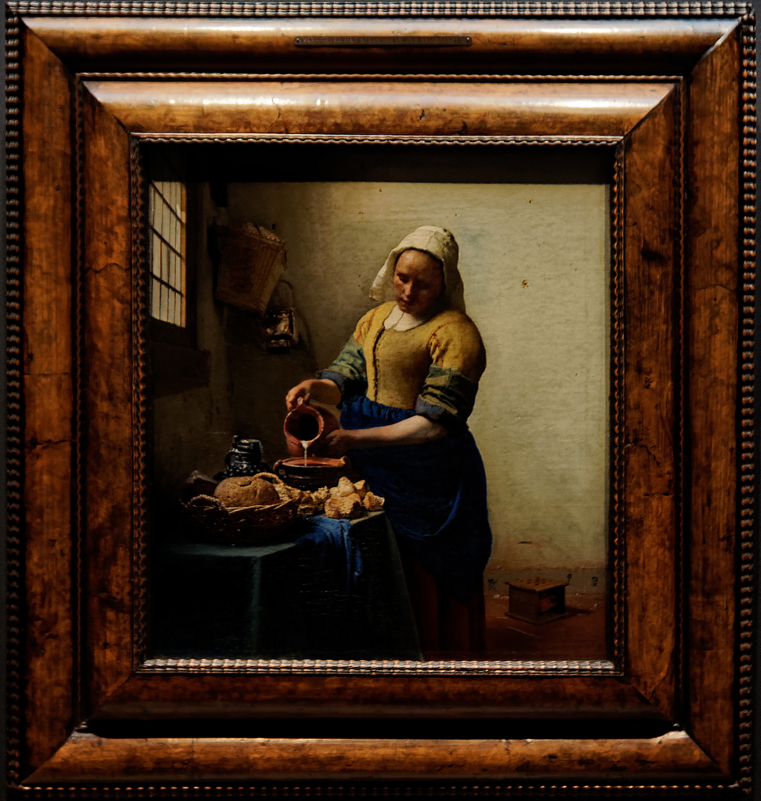

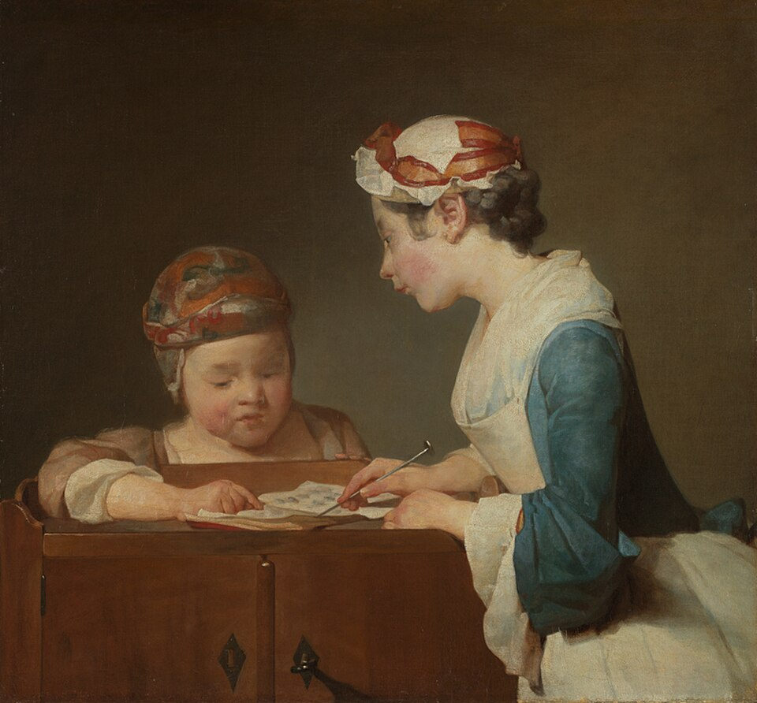
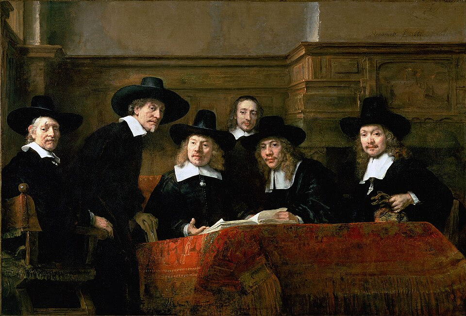
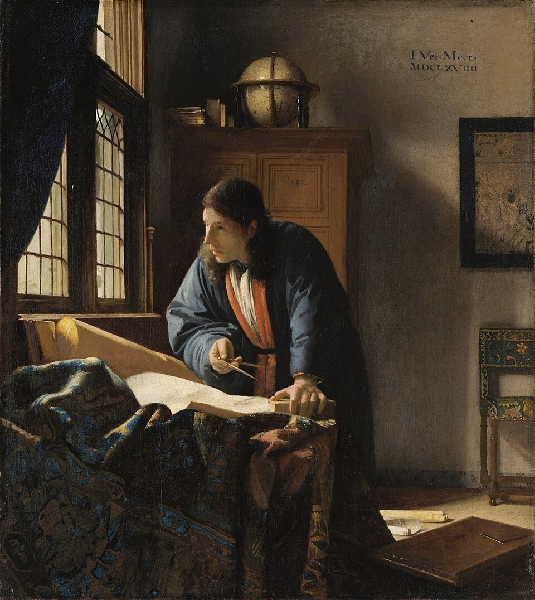
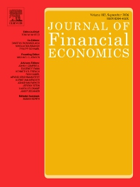